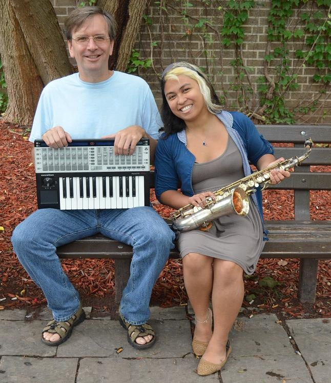

By Vjosa Isai
Uploaded on November 2, 2013
| Karen Quinto swung the biology lab door open and dashed inside. She searched beneath workstations, careful not to knock over any of the hundreds of colourful test tubes, not sure if she would find it. After a few minutes of hunting, she pulled out a black saxophone case plastered with faded stickers. Back in the George Vari Engineering building, Dr. Lawrence Kolasa entered his handkerchief-sized office. The space was modestly decorated, mostly by piles of thick books about mathematics with daunting titles. He sat down and produced a mini-keyboard from beneath his desk. Together, this biologist-mathematician duo could combine their talents in the name of science. But they don't. Their unique collaboration is for the sake of music. Quinto, now a fourth-year student at Ryerson, met Kolasa in her first year math class in 2009. In addition to approaching her professor for extra help, Quinto also wondered if he would be interested in collaborating for a summer music project after learning that he mixes tracks on the side. |
|
Her musical influences include Mariah Carey, Billie Holiday, and Ella Fitzgerald, which comes across when listening to her silky, jazz tone quality. Kolasa was inspired by the greats of classic rock, namely Jimi Hendrix. The modern stuff, like dubstep, drum and bass, lounge, and ambient music are a shared curiosity for both musicians. Their band, called {Mandelbrot} & {Julia}, is named after what can only be described as a psychedelic .GIF image zooming into infinity. What Mandelbrots and Julias actually represent is a complex set of points bordered by two-dimensional fractal shapes. It is one of the best known mathematic equation visualizations. Quinto explains that this concept of boundaries inspired the name of their band because the borders in their collaboration are also complex. "My identity is defined by being a student, and he is a teacher, but we both learn from each other when we are composing," Quinto says. Kolasa echoes Quinto's remarks, noting that their peers and colleagues were not sure what to make of the band. This inspired the title of their first EP, Boundaries Dissolve. |
Spotlight Editor in Chief
Vjosa Isai
vjosa.isai@ryerson.ca
Want to get your time under the lights? Are you a writer looking to join the Artist Spotlight initiative? E-mail us at music@ryerson.ca to see how!